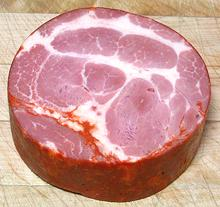
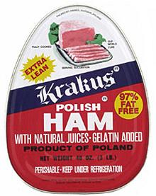

SAFARI
Users
Ham - Wet Cure, "City Ham"
The modern Wet Cure process is a fairly recent development, emerging from the realm of county fair contests along the American east coast in the mid to late 1800s. It proved to be far more suitable than the dry cure for large scale industrial production.
With improved transportation and commercial refrigeration coming on line in the late 1800s the relatively short shelf life of the commercial product became increasingly less of a problem and allowed reduction of the amount of salt used in the process. Processing time was greatly shortened by machinery which injected cure solution into the hams or tumbled them continuously in vats to massage the cure into the meat.
For the home and restaurant consumer, these hams were much less expensive and far more convenient than the dry cured - and, the wet cure ham, with much less salt, can serve as a main dish feature. The dry cured is used mostly for appetizers, recipe ingredients and sandwich slices.Cooking Wet Cure Hams - List of types and Complete method for cooking.
Ham - Dry Cure "Country Ham"
[Virginia ham, Springfield ham, Jamon Iberico, Jamon Serrano, Prosciutto, Jinhua ham, and many more]
The dry cure process has changed little since the time of the Roman Empire. The main improvements have been in the purity of the salt available and the discovery that potassium nitrate added to the salt cure greatly improved color, flavor and safety. The cure is much more controllable now.
Today almost all dry cured meat products include sodium or potassium nitrate and wet cure meat products include sodium or potassium nitrite (faster acting for the much shorter cure time) to improve safety and appearance. For details see our Curing Salts page.
Many dry cured ham products are still produced in America, Europe and
China, For details of buying, preparation and a list of types, see our
Cooking Dry Cure Hams
page.
Spanish Hams
[Jamon Serrano | Jamon Iberico]
Spain produces the most prestigious hams in the world. While they are now legally imported into the United States, the astronomical price limits enjoyment of them mainly to the detested 1%. They are much less expensive in Europe, but with transportation, duties and handling it's even far worse than foreign car parts here. Photo by Valdavia distributed under license Creative Commons Attribution-Share Alike 3.0 Unported.
These hams are to be sliced very thin and eaten raw. To this purpose special cutting fixtures and special knives are used. The bones left when the meat has been enjoyed, are also considered highly desirable for Spanish soups and stews, and are even sold separately by merchants that sell ham slices.
Jamon Serrano is a dry cure ham made from the legs of white Spanish pigs fed on special diets (how special dictates the final price). A whole 16 pound ham is likely to set you back around US $850.
Jamon Iberico is a dry cured ham made from the legs of black Iberian pigs. The most expensive are from pigs allowed to forage acorns in the cork oak forests of Spain. A whole 16 pound ham of this sort will set you back about US $1600. Those from pigs with less acorn in their diet can be a bit less.
"Serrano Style" hams are now made in North America. Not quite the same
as the Spanish, but costing between US $100 and $170, depending on aging
and smoking. No attempt is made to produce an "Iberico Style" because we
don't have cork oak forests here - we get our wine corks from Spain and
Portugal.
Bayonne Hams
[Jambon de Bayonne]
This is the famous ham of far southwestern corner of France, particularly Le Pays Basque, but also parts of Gascony. It is salt cured using two different kinds of salt at different tims, Salies-de-Béarn and sel de Bayonne, and it is not smoked. I don't know if it's currently legal to import it, but it is said some good imitations are made by the Basque communities of Northern California. They even import the proper salts. The best substitutes are Westphalian ham or a good quality Italian Prosciutto.
The photo shows Bayonne hams hanging in a drying room. The modern
drying cycle imitates the natural temperature and humidity changes of
the Pays Basque and Gascony from late October to July.
Photo by Peyre distributed under the
GNU Free Documentation License v1.2 or later.
Westphalian Ham
[Westälischer Schinken]
This famous dry cure ham is made from pigs fed on acorns in the forests of Westphalia, Germany. Smoked over beechwood and juniper, it has very deep ham flavor and is intended to be sliced very thin. It's a bit costly. The photo specimen, not from a gourmet outlet but from a low cost multi-ethnic market in Los Angeles, sold at US $13.99 / pound. The slice was 6-1/4 inches long and 2-1/2 inches high. While this ham was flattened, many Westphalian hams are round.
Similar products from Germany are Ammerläder Schinken, cured with
sea salt, brown sugar and spices, and smoked over beechwood, and
Schwarzwälder Schinken, Black Forest Ham, smoked over
sawdust and fir brush. Be Warned: most hams sold in North America by
the name "Black Forest Ham" are wet cure products with little resemblence to
the real thing.
Chinese Dry Cure Hams
[Jinhua ham and similar]
These hams have been made in China since at least back to the year 900, and are considered very fine. They have won prizes internationally, but they are still illegal to import into the United States. For this reason Asian markets here in California sell 1/2 to 3/4 inch thick slices of domestic Virginia type hams - usually made from the front leg to keep the slice size and cost reasonable.
The Chinese use this ham in a wide variety of stews, soups and soup
stocks. I buy them for use in American recipes also, and admit to being
guilty of slicing them thin and eating them raw - don't know what the
USDA would have to say about that. In any case, the Asian markets are
a convenient source for an otherwise difficult ingredient.
Photo by helennawindylee distributed under license Creative
Commons
Attribution-Share Alike 2.0 Generic.
Chinese Cured Smoked Ham
Much different from our hams, this one is quite dry, sweet and seasoned with soy sauce and smoke. It is meant to be an ingredient, cut into small pieces, rather than being eaten as a feature item.
The photo specimen, purchased from a large Asian market in Los Angeles, was
made by Hsin Tung Yang Foods Company of San Francisco, California, so we
can be pretty sure it's unleaded and contains no melamine.
Details and Cooking.
Prosciutto
[Parma Ham]
This product of Italy (the best are said to be from Parma) is a boneless, uncooked, dry cured ham, unsmoked (except a few in the Alpine region of Italy). It has a flattened shape because for part of the cure cycle it is held under weights. It is generally deboned for easy slicing. Delis will occasionally sell ends a pieces at a reduced price.
In Italy there is a cooked (cotto) form but elsewhere the raw (crudo) form
is expected. It is most commonly eaten raw, and, being tough and salty,
it is usually sliced very thin. If using it as a flavoring element in stews
or other cooked recipes, buy it unsliced so you can cut it into thicker
pieces. The fat is an important part of the product and sometimes
specifically called for in recipes.
Prosciuttini
[Pepper Ham]
A product of Italy, this is ham pieces molded into a cylinder or rectangle and
coated with pepper. It is usually not smoked. Compared to Prosciutto, it is
more tender, moister and less salty, thus more in need of careful
refrigeration. It is used mainly for sandwich slices. The photo specimen
was 4 inches in diameter.
Capicolla
 [Capocollo, Coppa]
This Italian product is made from meat of the neck and shoulder, lightly
seasoned and cured in the manner of ham. It is stuffed into a natural casing,
often coated with paprika, sometimes lightly smoked, and aged for up to 6
months. It is not very salty, and is used mainly for sandwich slices. If
coated with paprika, the flavor permeates the whole product but is not
particularly strong. The photo specimen was 4-1/8 inch diameter.
Other Hams
Culitello
(Italian) made from meat high in the butt end of the ham. Very lean and aged with spices and dry wine. Deep red color and sweet flavor.Gammon:
(primarily UK usage) the whole side of the pig is cured at once (usually a bacon cure) and the leg cut off after. Often sold as gammon steaks or slices. Generally boiled and sometimes glazed by a final baking.
Canned Hams
 [Jinhua ham and similar]
Canned hams vary tremendously in quality. I have read that the brand in the photo is quite good, but many are made of random chunks and pieces glued together, sort of like SPAM without the spicing. Gelatin is added to fill the can so the ham won't be rattling around in there. Photo © trademark owner.
Canned hams come two ways: "perishable", which need to be kept under refrigeration, and "eternal" which are fully cooked, pasteurized, shelf stable and can be eaten without cooking. A variation of canned hams is the "Hostess Ham". This one, generally chunks glued together, is packed in a cylindrical can for easy and uniform slicing.
For details on handling and cooking canned hams, see our page
Cooking Wet Cure Hams
(canned hams are always wet cure).
Ham and Water Product
These products are generally made from chunks and pieces of ham molded together
into a loaf. The photo specimen has a solid lump in the middle and the rest
is made up of small pieces and chopped ham, possibly "mechanically deboned".
These products slice well and are sold mainly for use in sandwiches. They are
always fully cooked and "ready to eat". This one was composed of 35% ground
ham shank, ham, water.
SPAM

SPAM is a construct from "Spiced Ham", and was first produced by Hormel Food Corporation in 1937. It is a canned pre-cooked meat product which has ham in it, but not as the major ingredient which is pork. It's popularity has been greatly enhanced worldwide by war and disaster. After WWII, American soldiers swore they'd never touch SPAM again so long as they lived, but soon succumbed to nostalgia. In England it is still remembered fondly as a major factor in the country not starving during the war. In Asia, also introduced by war and disaster, it is so favorably viewed it is made up in gift sets to be presented to the hostess when invited to dinner. A number of Asian dishes in the Philippines, China and Japan now incorporate it as a feature ingredient.
US SPAM consumption averages 3.8 cans per second. That's SPAM, not
Spam or spam, which are names for unwelcome emails. Ingredients: Pork with
ham, salt, water modified potato starch, sugar, sodium nitrite. There are
now a number of variations, the most common of which is Spam Lite, which
includes mechanically separated chicken as well as the traditional pork
and ham.
Deviled Ham Spread
 This product was developed by the William Underwood company in 1868 and is
now the property of Pillsbury Company. It is generally used as a spread on
crackers and in sandwiches. Texture is much like canned tuna (the kind
without big solid parts - do they still make any with solid parts?). The
flavor is a little like it too, but it has noticeable chili heat (the
"deviled" part). The devil now on the can is a much friendlier looking guy
than on the original cans. Ingredients: ham (cured with water, salt), brown
sugar, sodium nitrite, seasoning (mustard
flour, spices, turmeric).
This product was developed by the William Underwood company in 1868 and is
now the property of Pillsbury Company. It is generally used as a spread on
crackers and in sandwiches. Texture is much like canned tuna (the kind
without big solid parts - do they still make any with solid parts?). The
flavor is a little like it too, but it has noticeable chili heat (the
"deviled" part). The devil now on the can is a much friendlier looking guy
than on the original cans. Ingredients: ham (cured with water, salt), brown
sugar, sodium nitrite, seasoning (mustard
flour, spices, turmeric).